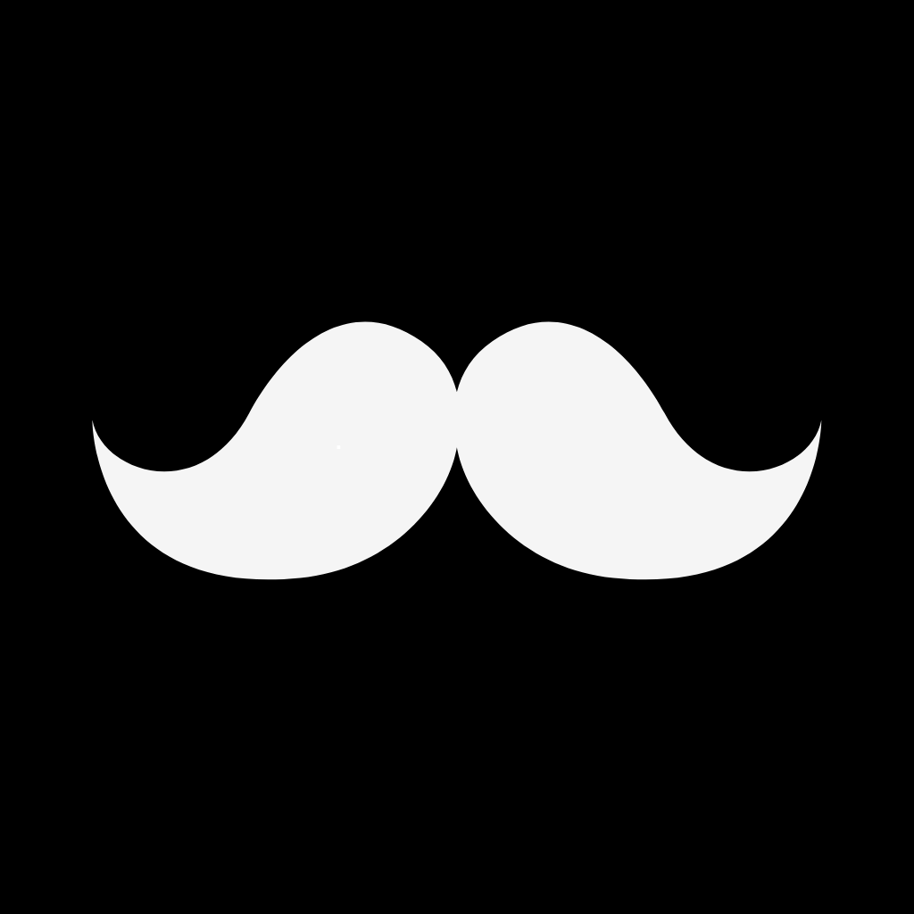

Beta — Windows & macOSSenin verini senin makinende tutan, sesle çalışan kişisel masaüstü asistanı.
Günlük iş akışını sesle veya yazıyla yönet. Sadık seninle çalışır, senin adına değil.
Türkçe konuş, Sadık görevi yapsın. Görev sil, alışkanlık sorgula, Pomodoro başlat, mod değiştir — hepsi sesle.
Google Takvim etkinliklerini ve Notion sayfalarını çek, görev listene aktar. Toplantı başlamadan önce bildir.
Uygulama kullanım kalıpların kümelenir, profil çıkarılır, LLM bağlamına enjekte edilir. "Normalde pazartesi sabahları kod yazardın" diyebilsin.
Kodlama, Yazarlık, Toplantı, Mola ve daha fazlası. Her mod farklı odak seviyesi ve bildirim kuralı getirir.
Ses kaydı STT işleminden hemen sonra silinir. Bellek içerikleri, aktivite geçmişi ve uygulama kullanımı yalnızca kendi makinende kalır. Üç hazır preset ile gizlilik seviyeni kendin seç.
Davranış öğrenme ve takvim/Notion entegrasyonu açık. Sadık seni en iyi tanır — özet veriler opt-in ile cloud'a gider.
Entegrasyonlar açık, davranış öğrenme kapalı. Anlık sorgular için yeterli bağlam, minimum veri çıkışı.
Hiçbir özet veya bağlam cloud'a gitmez. Yalnızca aktif sesli/yazılı prompt içeriği LLM'e iletilir.
Her LLM isteğinde ayarlar ekranında canlı önizleme: "şu an şu veriler gidiyor." Redaksiyon katmanı e-posta, telefon ve API anahtarı gibi hassas kalıpları otomatik maskeler.
SADIK masaüstü uygulamasının yanı sıra, USB bağlantılı bir cihaz da kullanabilirsin. Cihaz olmadan uygulama eksiksiz çalışır.
0.96" mono OLED ekran. Yüz animasyonları ve durum göstergesi. ESP32 WROOM-32 tabanlı.
1.8" TFT renkli ekran (160×128). Akıcı clip animasyonları. ESP32-S3 N16R8 tabanlı.
Cihaz USB ile bağlanır; masaüstü uygulaması otomatik algılar. Donanım satışı beta sonrası planlanmaktadır.
Her yeni sürümün değişiklikleri GitHub Releases'ta listelenir.